For single-turn circular loop inductance:
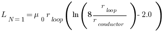
[r_loop - loop radius in meters; r_conductor - conductor radius in meters]
For multi-turn circular loop inductance:
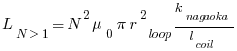
[k_nagaoka - Nagaoka coefficient; l_coil - length of the coil in meters; r_loop - radius of the loop in meters]
For octagonal loop antenna inductance:[F W Grover]
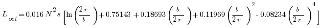
[L - microhenries; N - turns; s - section side length cm; r - loop circumradius in cm; b - coil length in cm]
For hexagonal loop antenna inductance:[F W Grover]
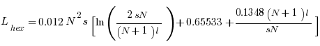
[L - microhenries; N - turns; s - section side length cm; r - loop circumradius in cm; b - coil length in cm]
For square loop antenna inductance:[F W Grover]
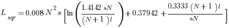
[L - microhenries; N - turns; s - section side length cm; r - loop circumradius in cm; b - coil length in cm]
Loss resistance:
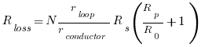
Surface resistance:
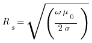
Radiation resistance for circular loop:
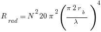
Radiation resistance for octagon, hexagon and square loop:
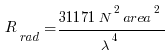
Radiation efficiency:
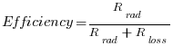
Q factor:
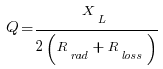
Capacitor voltage:
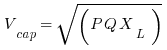
Loop current:
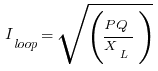
Bandwidth:
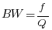
Single-loop capacitance:
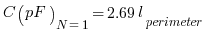
[l_perimeter - conductor perimeter length in meters]
Multi-turn loop capacitance:
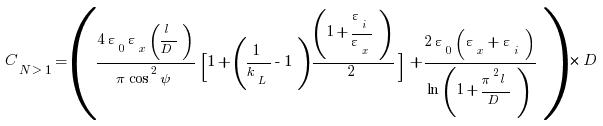
[Based on David W Knight's (G3YNH) paper "The self-resonance and self-capacitance of solenoid coils: applicable theory, models and calculation methods"]